地政学
ダカールはアフリカ大陸の西端にあり、港、空港、官庁、大使館、国際機関が集まる。大西洋航路とサヘル内陸を結ぶ位置は、貿易と外交の強みである一方、沿岸防衛、移民、海洋資源管理の課題も日常に近い要衝だ。
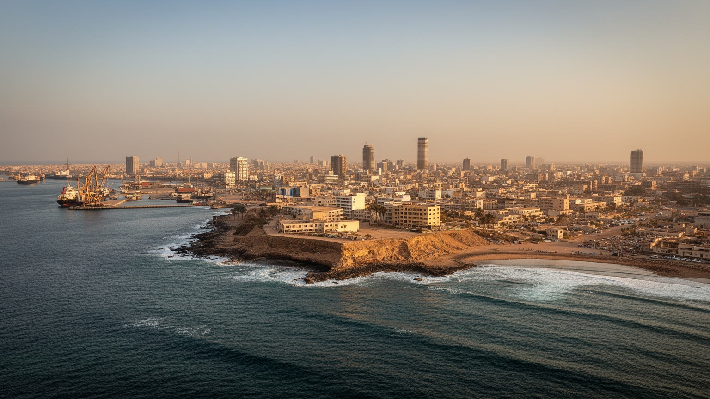
🇸🇳 セネガル / 西アフリカ / World City Atlas
アフリカ大陸の西端にある首都。港、行政、外交、音楽、イスラム信仰、漁業、ゴレ島の記憶、海岸浸食、郊外化が、狭い半島の都市圏に重なっています。
都市の骨格
ダカールは広い内陸へ伸びる都市ではなく、海に囲まれた半島と郊外回廊で成り立つ。港、官庁、大学、市場、漁村、住宅地、記憶の島が近距離に集まり、国の政治と日常の商いを同時に動かす。
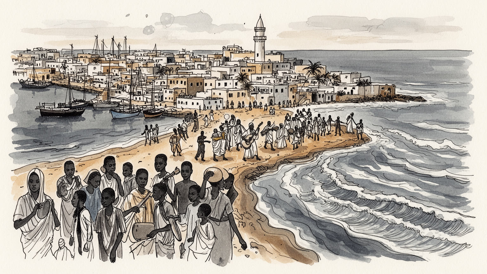
ダカールはアフリカ大陸の西端にあり、港、空港、官庁、大使館、国際機関が集まる。大西洋航路とサヘル内陸を結ぶ位置は、貿易と外交の強みである一方、沿岸防衛、移民、海洋資源管理の課題も日常に近い要衝だ。
港湾物流、行政、金融、通信、大学、漁業、建設、小売、観光が雇用を支える。コンテナ、魚市場、路上販売、バス運転、清掃、家事労働が都市の速度を作り、若者の仕事不足と非公式経済の厚みも見える街なのです。
スーフィー教団、モスク、金曜礼拝、ラマダン、家族儀礼が生活の暦を作り、ムバラクス、ヒップホップ、美術、映画、布、市場の声が都市文化を厚くする。信仰と創作は街路と家庭の両方で続く力です。今も続く街。
訪問者はゴレ島、海岸、灯台、市場、音楽を巡るが、住民には家賃、通勤、断水、廃棄物、海岸浸食、若者の雇用が切実だ。観光の記憶と生活の負担を同じ半島の限られた土地で読む都市である現実も強く残る街なのだ。
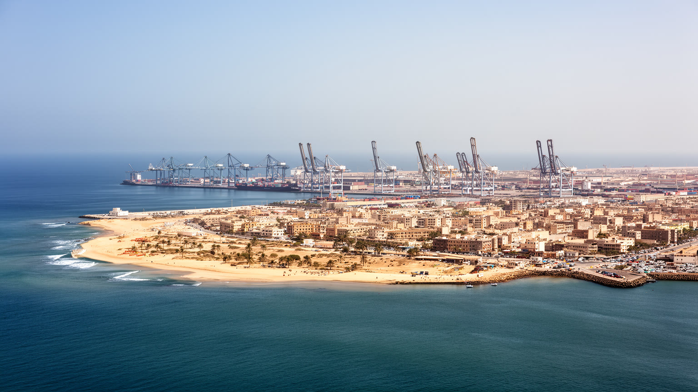
ダカールを読む第一の入口は、都市がアフリカ大陸の西端へ突き出したカプヴェール半島に置かれていることだ。海は眺めの背景である前に、港、漁場、軍事、気候、交通、廃棄物、住宅地の限界を決める条件である。旧市街と港、プラトーの官庁街、メディナ、大学、アルマディの海岸、ヨフやンゴールの漁村、ピキンやゲジャワイの高密度郊外、ディアムニアディオ方面の新開発は、狭い土地と幹線道路に沿ってつながる。半島の先端に首都機能が集まるため、通勤と物流は限られた回廊へ集中し、渋滞は日々の時間を奪う。海風は暑さを和らげるが、塩害、浸食、高潮、排水不良も都市を傷める。ダカールの地理は開放性と窮屈さを同時に持つ。港から世界へ開かれ、内陸諸国の貿易にも関わる一方、住民の生活は半島の土地不足、家賃、交通、公共サービスの制約を強く受ける。地図で海岸線だけを見ると美しいが、実際には港のゲート、魚の荷揚げ場、バス停、露店、砂浜を守る壁、未舗装の路地が連続する。半島都市としてのダカールは、海に向かって広がる夢と、内側で圧縮される日常が同居する場所である。都市の伸び方もこの地形に縛られる。中心から離れても職場や大学は半島側に残りやすく、郊外の住民は毎朝同じ方向へ向かう。海と道路の間に挟まれた土地では、学校、公園、排水路、住宅、商店を置く余地が競合し、計画の遅れはすぐ暮らしに現れる。
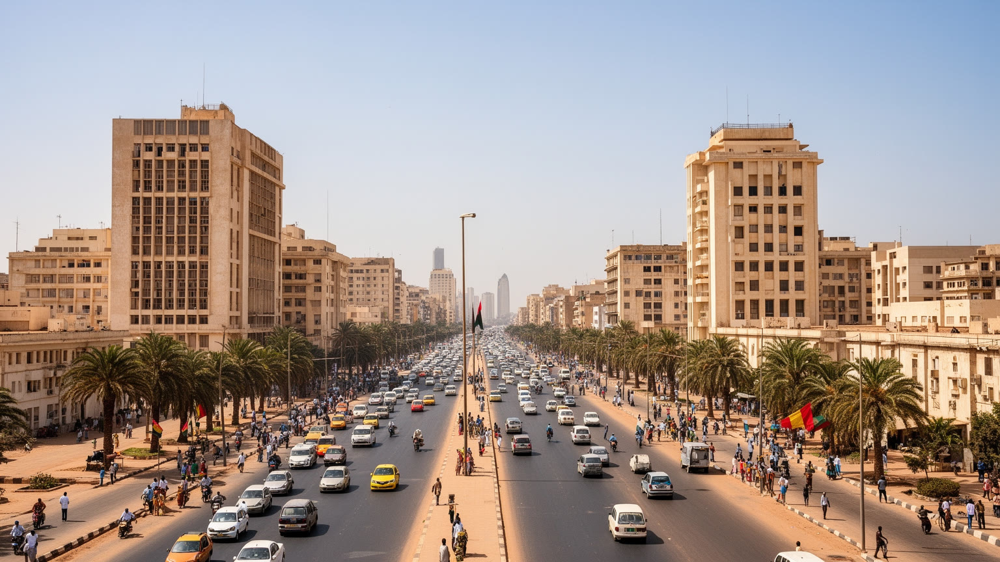
ダカールはセネガルの行政首都であり、大統領府、各省庁、議会、裁判所、大使館、国際機関、報道機関、大学、銀行が近い距離に置かれている。独立後のセネガルは西アフリカの中で比較的安定した政治移行を重ねてきたが、首都の街路には選挙、抗議、警備、学生運動、労働争議、物価への不満が繰り返し現れる。プラトーの官庁街は制度の中心である一方、周辺の市場、バスターミナル、大学、住宅地から人の声が流れ込む。政治は遠い建物の中だけでなく、新聞売り場、ラジオ、宗教指導者の発言、家族の会話、路上の集会を通じて広がる。セネガルではイスラム教団、地域有力者、若者運動、女性団体、労働組合、ディアスポラの送金が政治社会を形づくり、首都はその調整の舞台になる。ダカールの首都性は、国家を代表する整った大通りと、生活の要求が押し寄せる雑多な街路の重なりにある。地方から来る学生や求職者、行政手続きを求める人、国際会議に集まる外交官が同じ都市空間を使うため、首都の決定は住民の家賃、交通、雇用、表現の自由と切り離せない。ダカールを見ることは、制度がどのように日常の路上へ降りてくるかを見ることでもある。首都への集中は、地方都市との距離も生む。予算、大学、専門病院、メディアがダカールに偏るほど、全国の問題がこの都市へ持ち込まれ、同時に地方の声が中心で聞こえにくくなる。首都政治は、国内の均衡をどう保つかという課題でもある。
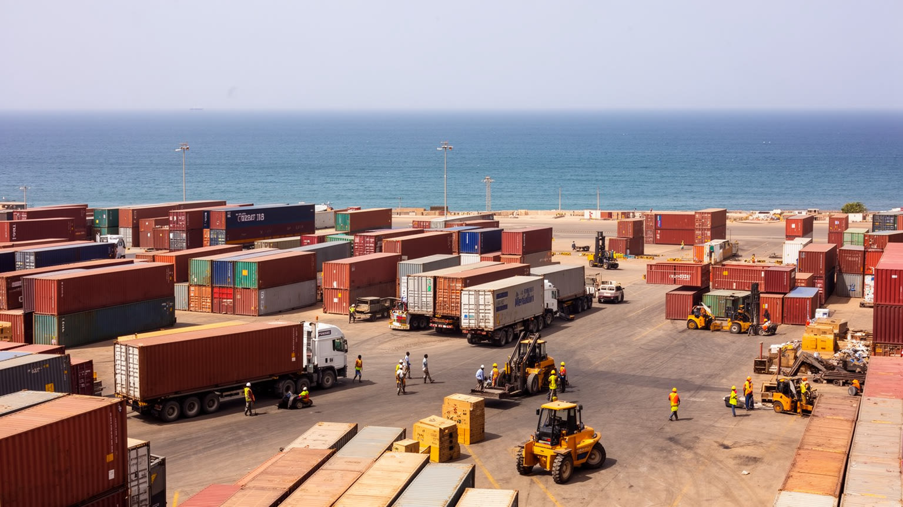
ダカール港は都市経済の心臓部である。コンテナ、燃料、穀物、車両、建材、冷凍食品、援助物資、漁獲物が港を通り、セネガル国内だけでなくマリなど内陸へも運ばれる。港の近くには倉庫、通関業者、運送会社、銀行、保険、修理工場、露店、食堂が集まり、海上貿易と街の小商いが近接する。港湾経済は数字で見ると物流と貿易だが、実際には荷役、トラック運転、書類手続き、冷蔵設備、警備、清掃、夜間労働、道路の混雑として経験される。輸入品に頼る都市では、国際価格や為替、燃料費の変化が市場の米、油、建材、交通費にすぐ響く。漁業も港の重要な層である。零細漁民、仲買人、女性の加工労働、市場の販売、輸出向け冷凍設備が海と家庭の食卓をつなぐ一方、乱獲、外国船、燃料費、海洋汚染が生活を圧迫する。港は発展の象徴であると同時に、道路渋滞、大気汚染、土地争奪、沿岸住民の不安を生む。ダカールを港湾都市として読むには、クレーンや船だけでなく、荷を待つトラック、魚を売る女性、通関の窓口、港の周りで働く若者、内陸へ続く道路を同じ経済の流れとして見る必要がある。港の拡張や近代化は効率を高めるが、古い倉庫街、小さな修理業、魚の扱い場を押し出すこともある。物流の速さと地域の仕事をどう両立させるかが、港町としての成熟を左右する重要な条件になるのだ。
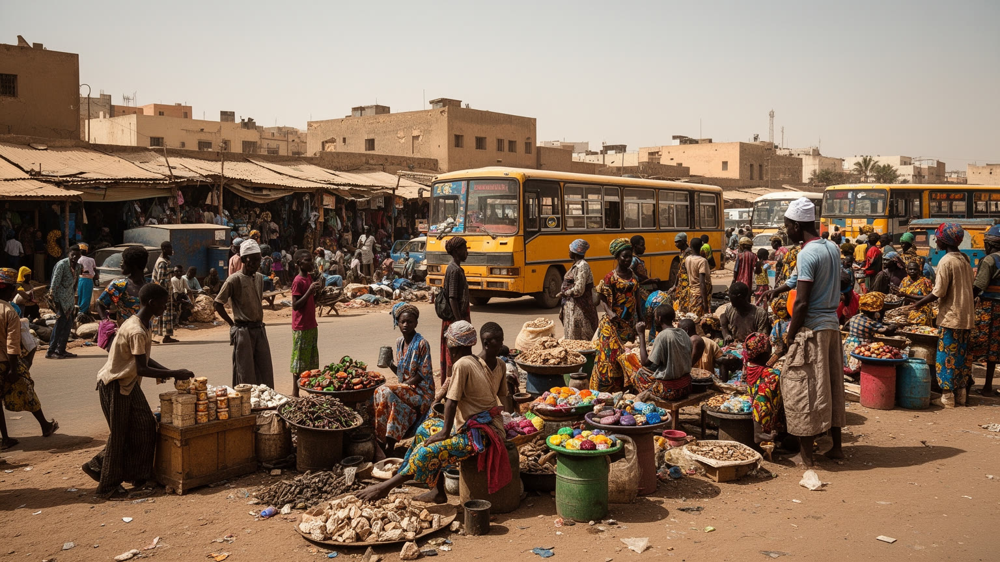
ダカールの労働を考える時、若い人口と非公式経済の厚みを避けて通れない。大学や専門学校を出た若者が公務員、銀行、通信、国際機関、メディア、IT、起業を目指す一方、多くの人は露店、運転、配達、建設、家事労働、修理、飲食、警備、日雇いの仕事で生活を組み立てる。路上で物を売る人、携帯電話を修理する人、バスの呼び込み、魚を運ぶ人、髪を編む店、仕立屋、小さな食堂は、都市の雇用を支える重要な基盤である。だが非公式な働き方は、収入の不安定さ、社会保障の不足、警察や行政との摩擦、雨季や病気への弱さを抱える。女性の労働は市場、家内加工、家事、育児、介護、販売で大きいが、統計に表れにくい負担も多い。ディアスポラからの送金は家庭や住宅、教育を支える一方、若者に海外移住への期待も生む。ダカールの産業政策は、港湾や新都市開発だけでなく、街路の小商い、職業訓練、交通、保育、金融アクセスを含めて考える必要がある。若い都市の活力は、音楽やファッションの明るさだけでなく、働き続けられる制度があるかで決まる。仕事が不安定なままでは、都市の才能は移動や失望として外へ流れ出てしまう。デジタル決済や小規模融資は新しい機会を作るが、通信費、身分証、信用、教育格差が壁になる。職を作る政策は、若者を起業家として励ますだけでなく、失敗した時に生活を立て直せる安全網まで含む必要がある。
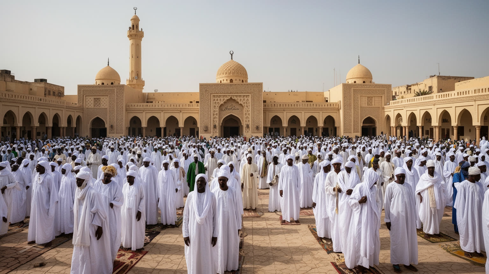
ダカールの生活にはイスラム信仰が深く息づいている。モスクの礼拝、ラマダンの断食と夕食、タバスキの家族行事、金曜の装い、宗教指導者への敬意、スーフィー教団のネットワークは、都市の時間と人間関係を整える。ムリッド、ティジャーニー、ライエンヌなどの教団は、単に信仰の組織ではなく、商売、相互扶助、教育、移住、政治的仲介にも関わる社会の骨格である。トゥーバやティヴァワンへの巡礼は首都の外へ向かう宗教的な動きだが、ダカールの市場や家庭にもその影響は戻ってくる。キリスト教徒の共同体も都市にあり、祭礼、学校、医療、近隣関係の中で共存が保たれてきた。信仰は公共空間の音、服装、食、寄付、葬儀、結婚、名前の付け方に表れるため、観光名所だけを見ても都市の深いリズムは分からない。同時に、宗教的権威と若者の自由、女性の役割、政治との距離、世俗教育との関係は常に議論される。ダカールを信仰から読むことは、祈りを個人の内面としてだけでなく、都市の信頼、商い、家族、公共性を支える仕組みとして見ることだ。忙しい首都であっても、礼拝と家族の時間が街路の速度をいったん変える。その調整が都市の秩序を作っている。宗教は貧困や病気への支援、葬儀費用の分担、移住者の相談にも関わり、行政だけでは届きにくい安心を補う。ただし、その力が強いほど、異なる考え方や少数者の居場所をどう守るかも都市の課題になる。
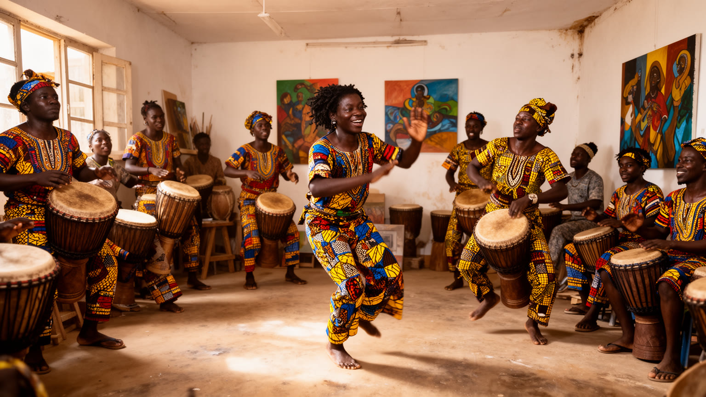
ダカールの文化は、港町の開放性、ウォロフ語の都市的な響き、イスラムの暦、植民地都市の記憶、若者の創作が混ざり合って生まれる。ムバラクスのリズム、ヒップホップ、サバールの太鼓、ラジオ、クラブ、結婚式、宗教行事の歌、街角のスピーカーは、都市の音風景を作る。音楽は娯楽であるだけでなく、政治批評、社会的な誇り、若者の表現、ディアスポラとの接続でもある。美術では、セネガル独立後の文化政策、ダカール・ビエンナーレ、ギャラリー、工房、壁画、ファッション、写真が都市の視覚文化を広げてきた。布市場、仕立屋、髪型、香水、携帯電話、サッカーのユニフォームは、日常の美意識を街路に出す。映画と文学も、都市の移動、失業、家族、移民、信仰、海への憧れを描いてきた。文化産業は華やかに見えるが、制作費、会場、著作権、家賃、電力、機材、移動費の問題を抱える。ダカールを文化都市として読むには、有名な音楽家だけでなく、練習場、結婚式のバンド、露店の音源、若者の詩、女性の装い、小さな映画上映まで見る必要がある。文化は都市の名物ではなく、働き口が不安定な若者が自分の声を作るための場所でもある。創作の場はしばしば住宅地や路地の中にあり、家族、隣人、宗教行事、市場の騒音と分けられない。だからダカールの表現は、舞台上の作品だけでなく、日常の交渉から生まれる都市言語でもある。
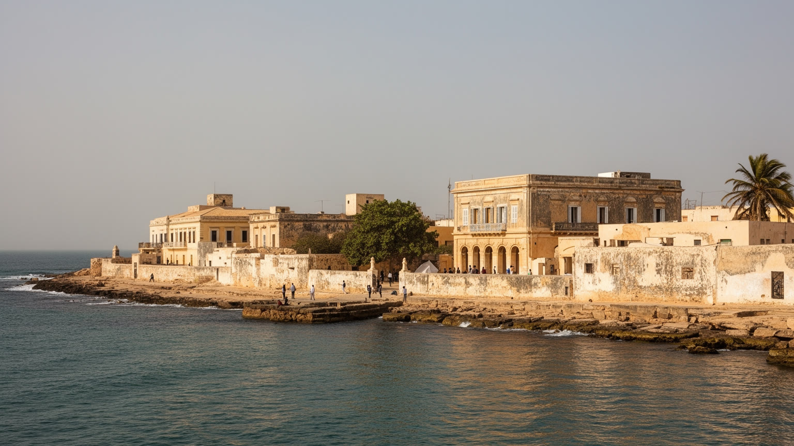
ダカール沖のゴレ島は、美しい植民地建築、静かな路地、海の色で知られるが、その中心には大西洋奴隷貿易の記憶がある。島の歴史をめぐっては、実際の出港規模や象徴化の仕方について学術的な議論もあるが、ゴレ島がアフリカ、ディアスポラ、植民地主義、記憶の政治を考える重要な場所であることは変わらない。訪問者はフェリーで短時間に島へ渡れるため、観光は手軽に見える。しかし、その手軽さが過去の暴力を消費しやすいものにしてしまう危うさもある。奴隷の家、博物館、要塞、教会、住民の生活、土産物店、学校、海辺の食堂は、記憶と日常が同じ島で重なることを示す。ゴレ島はダカールの観光資源であると同時に、歴史教育と追悼の場であり、海を渡った人々の痛みを現在へつなぐ場所である。記憶を尊重する観光には、写真を撮る前に説明を聞き、誰が語り、どの収入が地域に戻り、島で暮らす人の生活がどう守られるかを考える姿勢が必要になる。ダカールを読むうえでゴレ島は、首都の近代性の横に、暴力、交易、移動、抵抗の歴史が存在することを思い出させる。美しさと痛みを切り離さずに見ることが、この場所への最低限の礼儀である。フェリーを降りた瞬間の静けさも、対岸の喧騒と切り離されてはいない。島の保存、住民の収入、子どもの通学、観光客の数は、記憶を未来へ渡すための具体的な条件になる。
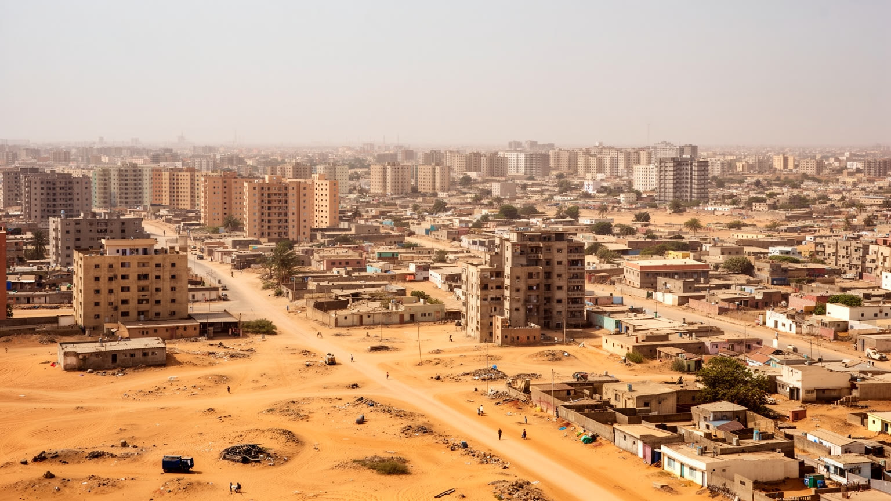
ダカールの暮らしを最も強く規定するのは、土地の不足と住宅費である。半島の中心部には官庁、港、商業、大学、病院、観光地区が集まり、便利な場所ほど家賃が上がる。多くの世帯はピキン、ゲジャワイ、リュフィスク、さらに新開発地へ生活圏を広げ、通勤と通学に長い時間を使う。家族や親族の同居は住居費を分け合う手段になるが、過密、暑さ、水、衛生、プライバシーの不足も生む。住宅地の拡大は、砂地の道路、排水の悪さ、雨季の浸水、公共交通の不足、学校や医療の距離と結びつく。ディアムニアディオのような新都市開発は、行政機能と住宅を分散させる試みだが、雇用、交通費、住民の移転、既存地区への投資不足をどう扱うかが問われる。ダカールの住宅問題は、建物の数だけでは解けない。人が働く場所、バスや鉄道の料金、女性や子どもの移動、安全な水、廃棄物処理、借家人の権利まで含めて考える必要がある。海に囲まれた首都であるほど、都市は外へ伸びざるを得ないが、外へ伸びるほど生活時間は長くなる。住まいを読むことは、首都の成功が誰の通勤時間と家族の負担によって支えられているかを読むことでもある。住宅は家族の尊厳にも直結する。客を迎える部屋、祈りの場所、子どもの勉強、料理と洗濯、暑い夜の風通しが確保できるかで、同じ都市に住んでいても生活の質は大きく変わる。
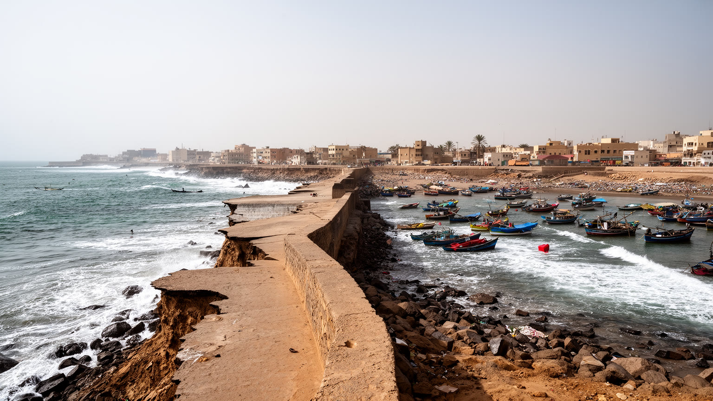
ダカールの気候は大西洋の海風に助けられ、乾季には比較的過ごしやすい日も多い。しかし、都市は気候リスクから自由ではない。雨季の激しい雨は、排水が十分でない低地や郊外住宅地に浸水を起こし、道路、学校、家屋、商売を止める。海岸では浸食、高潮、砂浜の減少、護岸工事、リゾート開発、漁村の生活が衝突する。海に近いことは観光と漁業の資源である一方、住宅や道路を脅かす条件でもある。気温上昇は屋外労働、露店、建設、交通、学校、高齢者や子どもの健康に影響する。水不足や断水は、家庭の負担を女性や子どもに偏らせやすい。廃棄物と排水の問題は、海洋汚染や衛生に直結し、魚を食べる文化や海辺の観光にも跳ね返る。ダカールの気候適応は、堤防だけでは足りない。排水路の清掃、湿地の保全、砂浜の管理、公共交通、日陰、水道、廃棄物回収、災害情報を組み合わせる必要がある。海岸線を美しい景観として守るだけでなく、そこに暮らし、働き、漁をする人の生活を守れるかが重要である。ダカールの海は都市を世界へ開くが、気候変動の時代には都市の弱点も映し出す鏡になる。沿岸のリスクは貧しい地区ほど重くなる。移転先の仕事、学校、交通が用意されなければ、防災の名の下に生活基盤を奪うことになる。気候対策は技術だけでなく、公平な移転と補償の問題でもある重要課題だ。
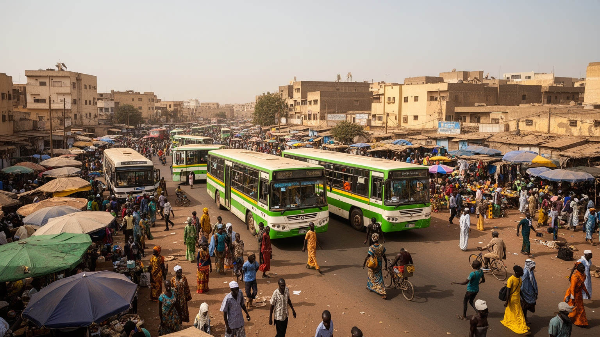
ダカールの日常は移動に大きく左右される。半島先端の職場や学校へ向かう人、郊外から市場へ商品を運ぶ人、港へ出入りするトラック、漁港へ向かう車、空港や新都市方面へ動く人が、限られた道路に集中する。伝統的なカール・ラピッドやミニバス、タクシー、徒歩、二輪、近年整備された高速バスや郊外鉄道は、都市をつなぐ重要な手段である。交通改善は単に速く移動するためではなく、仕事に遅れず、子どもを学校へ送り、病院へ行き、市場の品物を運び、夜に安全に帰るための生活基盤である。運賃が高すぎれば貧しい世帯は機会から遠ざかり、乗り換えが難しければ高齢者や障害のある人、子ども連れの女性には使いにくい。道路の混雑は大気汚染、時間の損失、ストレス、燃料費を増やし、港湾物流にも影響する。交通の近代化が進むほど、既存の運転手や呼び込み、整備工、露店の生活をどう移行させるかも問題になる。ダカールの都市交通を読むには、新しいインフラの開通だけでなく、バス停の日陰、歩道、料金、夜間の安全、郊外の排水、港の車列まで見る必要がある。移動時間は、住民の睡眠、家族の食事、働ける時間を決める。都市の公平性は、誰がどこへどれだけの負担で行けるかに表れる。公共交通が信頼できるほど、郊外に住む人も教育や仕事に近づける。逆に遅れや混雑が続けば、都市の成長は毎日の疲労として蓄積される。
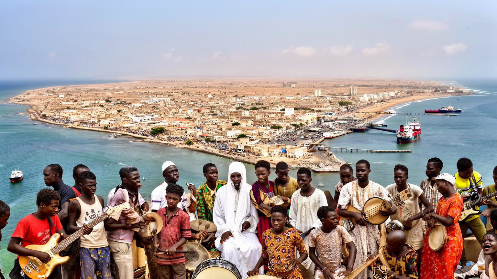
ダカールを読むことは、海辺の明るい首都像と、半島に圧縮された生活の重さを同時に見ることである。大統領府、港、大学、モスク、市場、漁村、ゴレ島、郊外住宅地、音楽の場、国際機関、道路の渋滞は別々の要素ではない。どれも、限られた土地と海への開放性をめぐって結びついている。セネガルの政治と外交はここで可視化され、輸入品と魚は港と市場を通じて家庭に届き、若者の創作は仕事不足や移民の夢と隣り合う。信仰は都市の時間を整え、ディアスポラは送金と文化の回路を作り、ゴレ島は大西洋世界の痛みを現在へ戻す。観光客にとってダカールは海、音楽、歴史の入口だが、住民にとっては家賃、水、交通、雇用、浸水、廃棄物、教育を毎日調整する場所である。だから都市の価値は、港の取扱量や新しい道路だけでは測れない。働く人が住み続けられるか、海岸の生活が守られるか、若者が表現と仕事を得られるか、記憶が丁寧に語られるかが問われる。ダカールは西アフリカの大西洋側を理解するための重要な都市であり、首都、港、信仰、文化、気候リスクが一つの半島でせめぎ合う現代都市である。急速な開発が進むほど、古い地区の記憶、小さな商い、漁民の権利、公共の海岸をどう残すかが重要になる。ダカールの未来は、海へ開く力と、住民の生活を守る力を同時に持てるかで決まる。